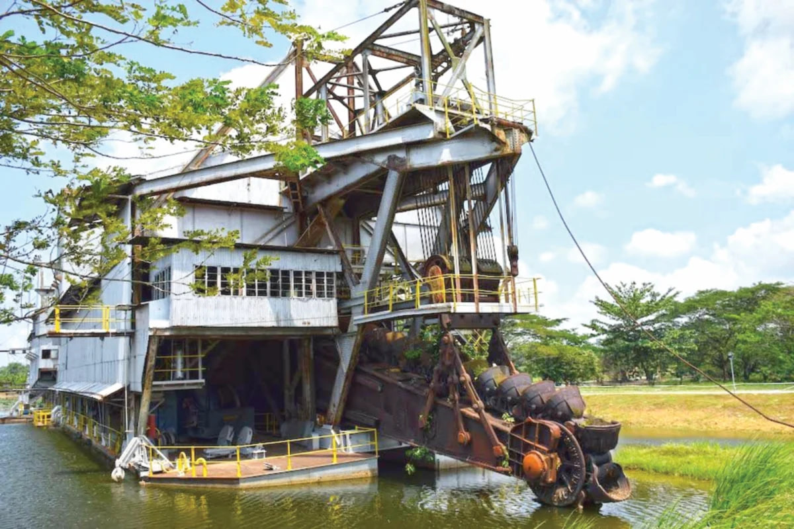

Interesting Places
Kellie's Castle
Kellie's Castle (sometimes also called Kellie's Folly) is a castle located in Batu Gajah, Kinta District, Perak, Malaysia. The unfinished, ruined mansion, was built by a Scottish planter named William Kellie-Smith. According to differing accounts, it was either a gift for his wife or a home for his son.

Warisan Kapal Korek
The first Dredger introduced in Malaysia was in 1917 by Malayan Tin Dredging Limited in Batu Gajah, Perak. While the last most modern dredger built in Malaysia was in 1985. The oldest dredger at that time was almost 70 years old.
Istana Raja Billah
Raja Billah, who was the head of the Board at that time, often used this palace for wedding celebrations, gatherings and meetings and meetings with the residents there.